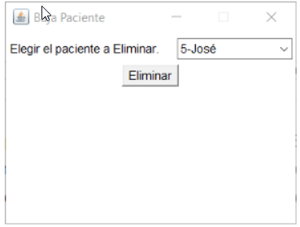
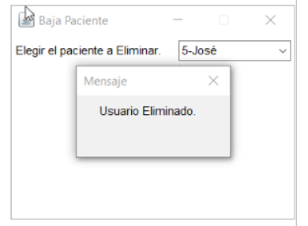

Para dar un elemento de baja, en el menú principal pulsamos en la tablas deseada, y en 'Baja'. Se abrirá la siguiente ventana, donde debemos seleccionar el elemento que daremos de baja. Pulsaremos el botón 'Eliminar'. Si no hemos seleccionado todavía ningún elemento, el botón no hará nada. Al pulsar en eliminar, se abrirá la siguiente ventana. Por seguridad, se nos pregunta si estamos seguros de eliminar el elemento seleccionado. Si pulsamos 'No', volveremos a la ventana anterior. Si pulsamos 'Sí', se mostrará un mensaje confirmando la baja.
 